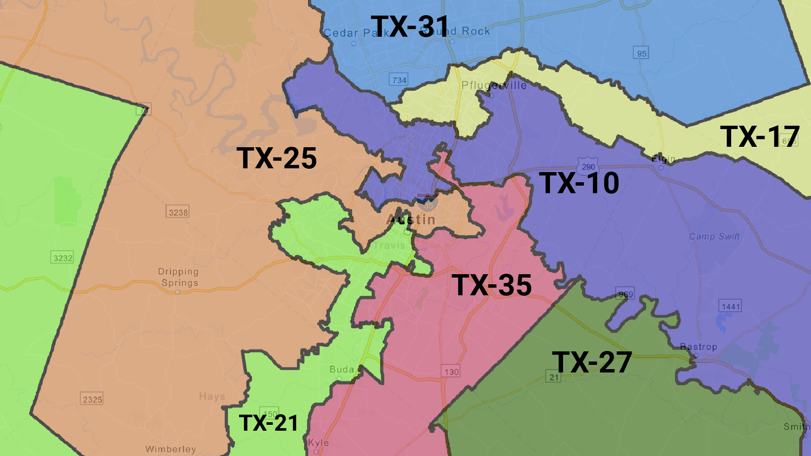
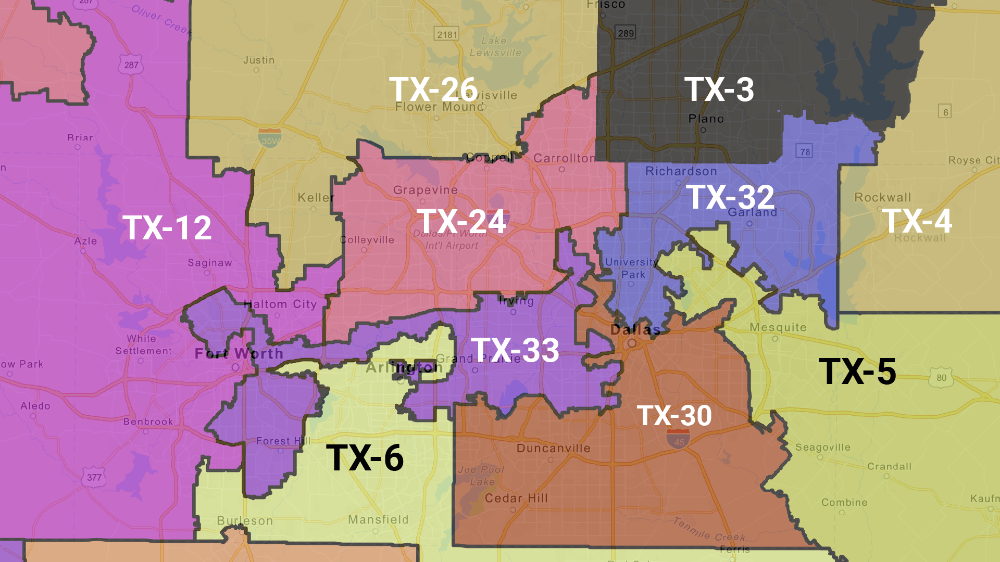

Explore how gerrymandering is affecting your city
Austin
Dallas-Fort Worth
Houston
San Antonio
Austin is a textbook example of how gerrymandering can greatly affect an area. Despite being one of the most Democratic cities in all of Texas (Travis County alone voted for President Biden 72% to 29%), Austin is represented by five Republicans and 1 Democrat in the U.S. Congress. This is because the districts around Austin incorporate a lot of rural land, which skews heavily for Republicans and dilutes a lot of the Democratic votes in the city. The one Democratic district (TX-35, represented by Lloyd Doggett) is a packed district meant to incorporate as many Democrats as possible.
Notable gerrymandered district: TX-35 (Lloyd Doggett - D)

While Dallas-Fort Worth (DFW) has become more competitive for Democrats in recent years (Biden carried both Dallas County AND Tarrant County in 2020), the area is still represented by 6 Republicans and 3 Democrats in Congress. Like Austin, a lot of the outer districts incorporate a lot of rural land (which skews heavily Republican) in order to dilute the Democratic voters in the two cities.
Notable gerrymandered district: TX-33 (Marc Veasey - D)

Houston is home to Harris County, which is the third most populous county in all of the United States. It is also one of the more Democratic counties in Texas, voting for President Biden 56%-43% in 2020. However just like the other major Texas cities, Houston is home to districts that intentionally include more rural/suburban land in order to dilute the votes of urban voters. This causes it to be represented by 5 Republicans and 4 Democrats.
Notable gerrymandered district: TX-2 (Dan Crenshaw - R)

What makes San Antonio’s districts unique is that most of them stretch out for long distances, meaning that the representatives of those districts usually don’t even live in San Antonio. TX-15 is represented by Vicente Gonzalez, who lives almost 300 miles away in McAllen, TX. Both TX-21 and TX-35 are represented by people from Austin (Chip Roy and Lloyd Doggett), and TX-28 is represented by Henry Cuellar from Laredo!
Notable gerrymandered district: TX-35 (Lloyd Doggett - D)